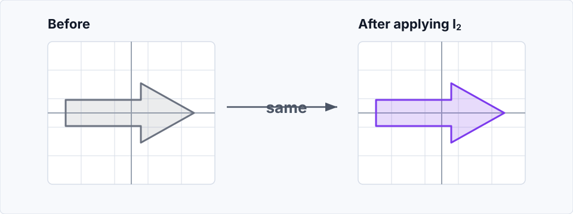

Linear Transformations
1 Linear Transformations in \(\mathbb{R}^2\)
Check out this interactive playground.
1.1 Identity Matrix
The first useful special case is the identity matrix:
\[ I= \begin{pmatrix} 1 & 0 \\ 0 & 1 \end{pmatrix}. \]
It is called the identity matrix because it leaves every vector exactly as it was. For an arbitrary vector \(v=\begin{pmatrix}x\\y\end{pmatrix}\),
\[ Iv = \begin{pmatrix} 1 & 0 \\ 0 & 1 \end{pmatrix} \begin{pmatrix} x\\y \end{pmatrix} = \begin{pmatrix} 1x+0y\\ 0x+1y \end{pmatrix} = \begin{pmatrix} x\\y \end{pmatrix}. \]
Here is the picture:

1.2 Determinant
For a matrix
\[ A= \begin{pmatrix} a & b\\ c & d \end{pmatrix}. \]
the columns tell us where the basis vectors go:
\[ Ae_1= \begin{pmatrix} a\\c \end{pmatrix}, \qquad Ae_2= \begin{pmatrix} b\\d \end{pmatrix}. \]
So the unit square spanned by \(e_1\) and \(e_2\) becomes the parallelogram spanned by \(Ae_1\) and \(Ae_2\).
The determinant
\[ \det A = ad-bc \]
is the signed area of that parallelogram. The ordinary geometric area is
\[ \left|\det A\right|. \]
Three useful cases:
- \(\det A=0\): area collapses to zero, so the map is not invertible.
- \(\det A<0\): orientation is reversed.
- \(\det A=1\): signed area is preserved.
Area preservation is weaker than shape preservation. Rotations have determinant \(1\), but so do shears
\[ \begin{pmatrix} 1 & k\\ 0 & 1 \end{pmatrix} \]
and reciprocal scalings
\[ \begin{pmatrix} s & 0\\ 0 & 1/s \end{pmatrix} \qquad (s\ne 0) \]
These all belong to
\[ SL(2,\mathbb{R})=\{A\in GL(2,\mathbb{R})\mid \det A=1\}. \]
Rotations are the stricter determinant-one maps that also preserve lengths and angles:
\[ A^TA=I, \qquad \det A=1. \]
The condition \(A^TA=I\) means that dot products are preserved:
\[ (Au)\cdot(Av) =u^TA^TAv =u^Tv =u\cdot v. \]
So lengths and angles are preserved. Equivalently, the columns of \(A\) form an orthonormal basis. In two dimensions, \(A^TA=I\) allows rotations and reflections; the extra condition \(\det A=1\) rules out reflections.